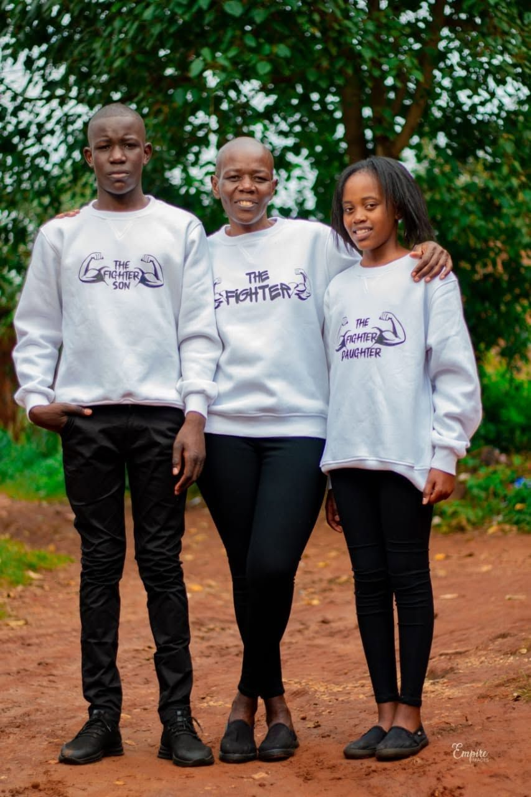

Elizabeth Sitawa Kisiangani did not set out to start an organization. Her story begins, like most do, before any of this — in an ordinary life, going about ordinary days, until a diagnosis interrupted everything and asked something new of her.
Before The Diagnosis
What her life looked like before cancer: her role in the family and community, her work, the kind of days she kept — before anything changed.
The Day Everything Changed
When and how she first suspected something was wrong, the symptom or moment that led her to seek care, and roughly when this was.
Understanding The Diagnosis
The specific type of cancer and the stage at diagnosis. This detail will only be published once confirmed directly with Elizabeth, in her own words.
The Weight Of Treatment
What her treatment actually involved — surgery, chemotherapy, radiation, or a combination — where she was treated, and roughly how long it took.
What Changed In Her
What is not in question is what came out the other side of it. Elizabeth chose not to carry her diagnosis privately. She spoke about it — to her family first, then her community, and eventually publicly — at a time when doing so was neither easy nor common.
That decision came from a simple conviction: that the fear and silence surrounding a cancer diagnosis were, in their own way, doing as much harm as the disease itself, and that naming what she was going through openly could change how the people around her responded to it.

Why She Believes Cancer Can Be Defeated
Elizabeth's conviction is not that fear disappears, or that every diagnosis ends the same way. It is that a person facing cancer stands a better chance when they are met with information instead of rumour, support instead of isolation, and dignity instead of stigma.
That belief — carried through her own recovery — is the reason Elizabeth Sitawa Cancer C.B.O. exists: to make sure the next person diagnosed in Trans Nzoia County has a community standing with them, not a silence around them.